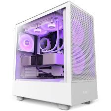

Bienvenido
Explora el fascinante mundo de las computadoras. Aprende sobre su historia, tipos y componentes.
Introducción a los Equipos de Computador: De sus Orígenes hasta la Actualidad
Los equipos de computador han recorrido un largo camino desde sus inicios en el siglo XX. Los primeros computadores, como el ENIAC en 1946, eran enormes máquinas que ocupaban habitaciones enteras y consumían grandes cantidades de energía. Sin embargo, con el avance de la tecnología, las computadoras se han vuelto más pequeñas, potentes y accesibles, transformando casi todos los aspectos de nuestra vida diaria.
Con el paso de las décadas, los avances tecnológicos permitiendo la miniaturización de componentes, el desarrollo de sistemas de transistor y posteriormente el microprocesador. Durante los años 80 y 90, las computadoras personales comenzaron a popularizarse, llevando la informática a hogares, oficinas y escuelas. Hoy en día, con el auge de la inteligencia artificial, el internet de las cosas (IoT) y la computación en la nube, las fronteras del uso de los equipos informáticos continúan expandiéndose, creando nuevas y valientes posibilidades para el futuro.
